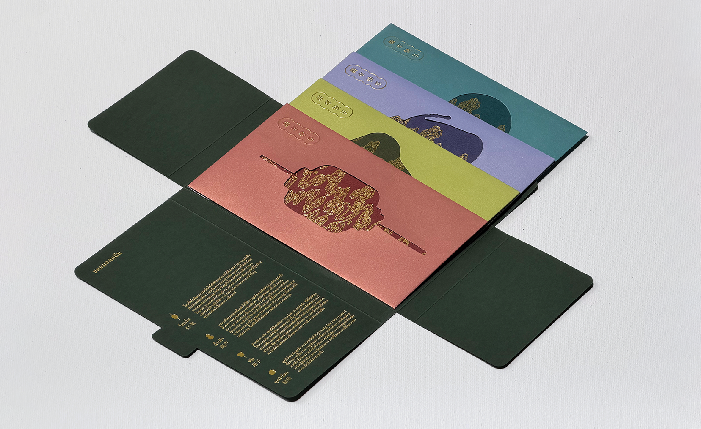
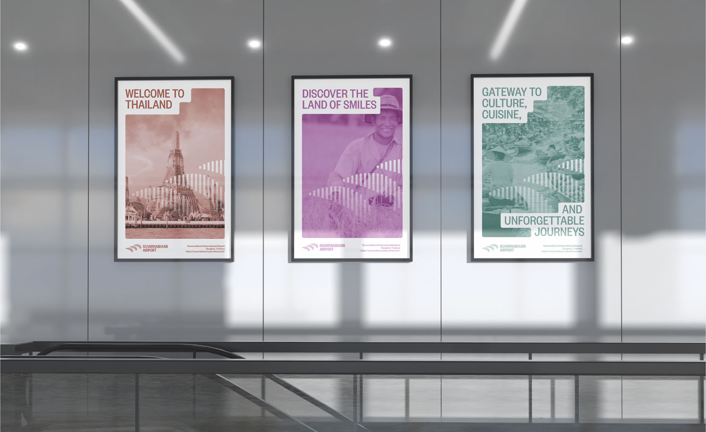


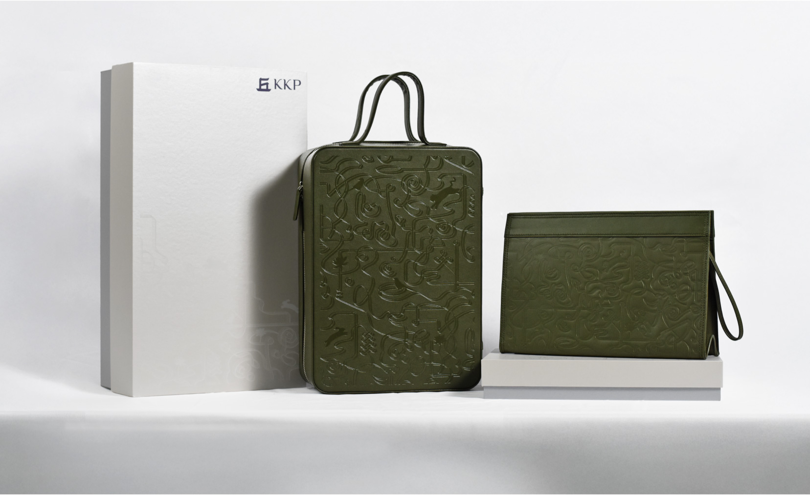


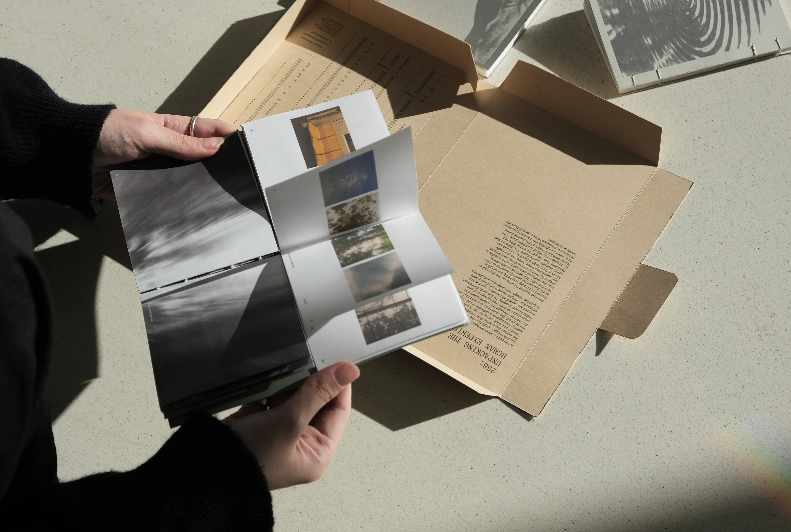
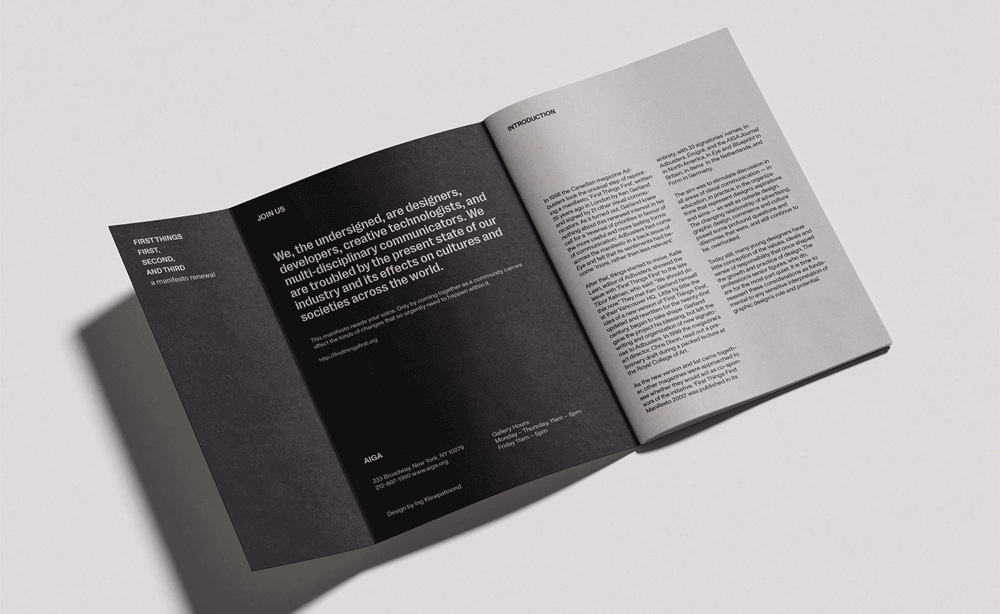





Work

Key AW / Graphic Design / Print & Packaging | Project Type: Freelance
Branding & Identity | Project Type: University Coursework

Branding & Identity | Project Type: University Coursework
Branding & Identity | Project Type: University Coursework
Graphic Design | Project Type: Freelance

Typeface Design / Graphic Design | Project Type: University Coursework

Graphic Design / Campaign | Project Type: University Coursework
About
Contact
Qualifications
Services
Playground
Graphic Design | Project Type: Personal Exploration
Graphic Design | Project Type: Personal Exploration
Archive
Editorial Design | Project Type: University Coursework
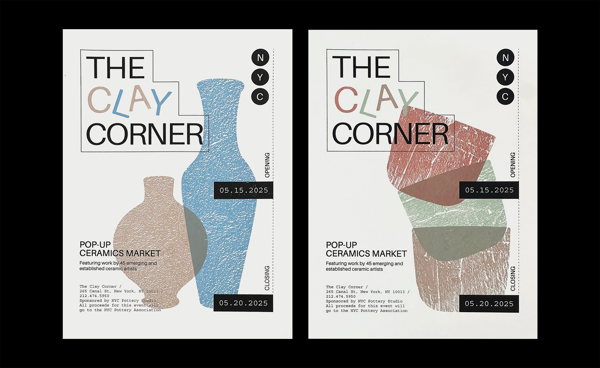
Graphic Design / Printmaking | Project Type: University Coursework
Data Visualization / Interaction Design | Project Type: University Coursework
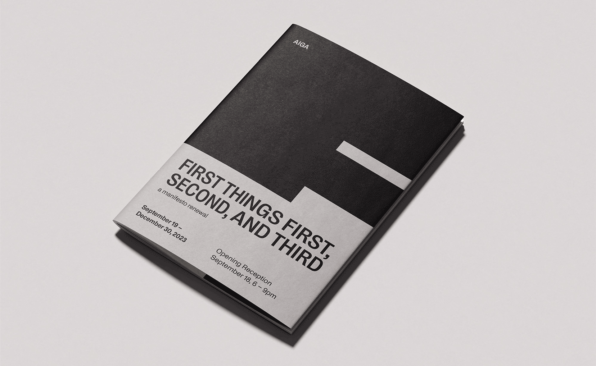
Editorial Design | Project Type: University Coursework
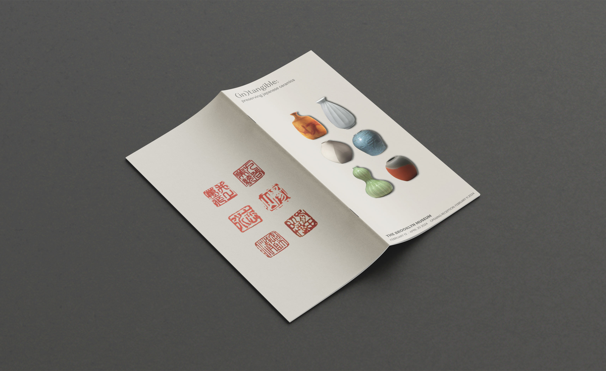
Branding & Visual Identity / Editorial Design | Project Type: University Coursework
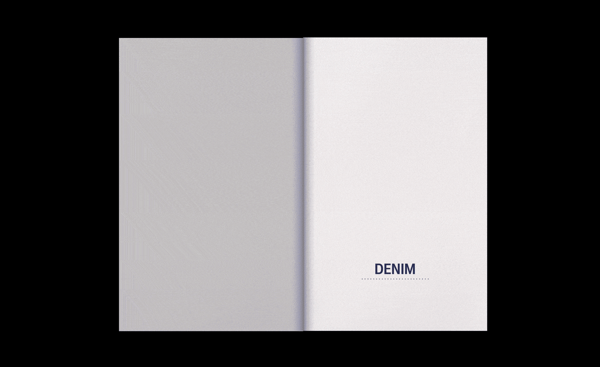
Editorial Design | Project Type: University Coursework
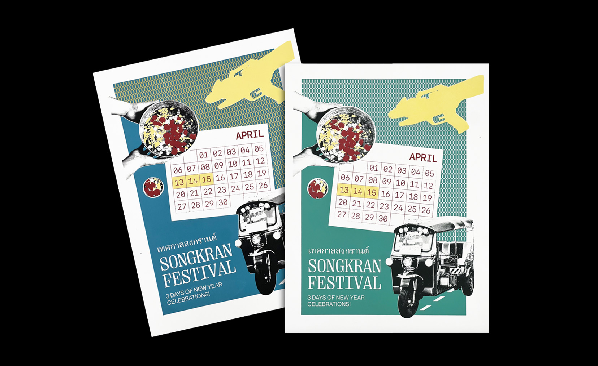
Graphic Design / Printmaking | Project Type: University Coursework
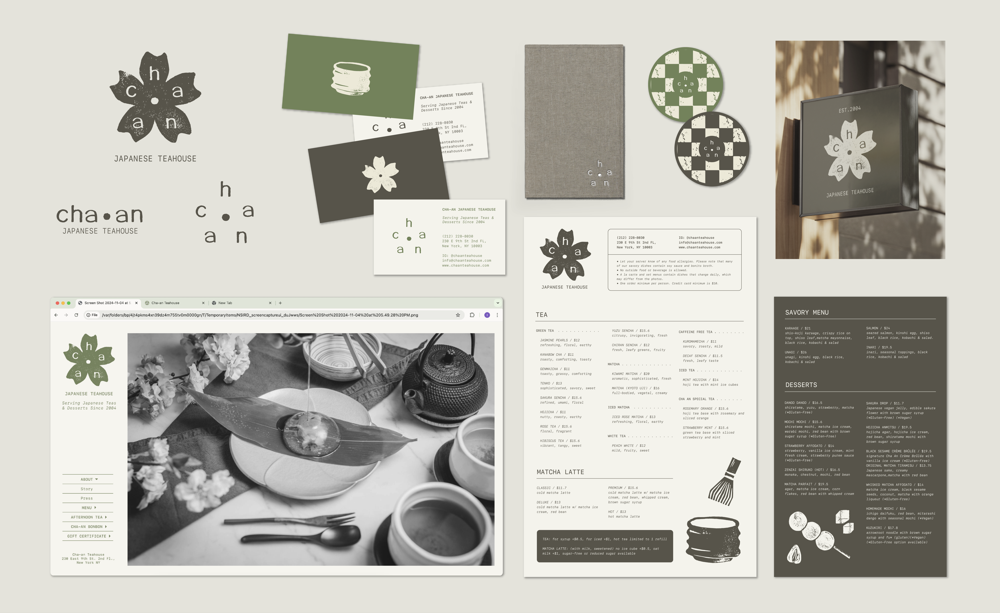
Editorial Design | Project Type: University Coursework